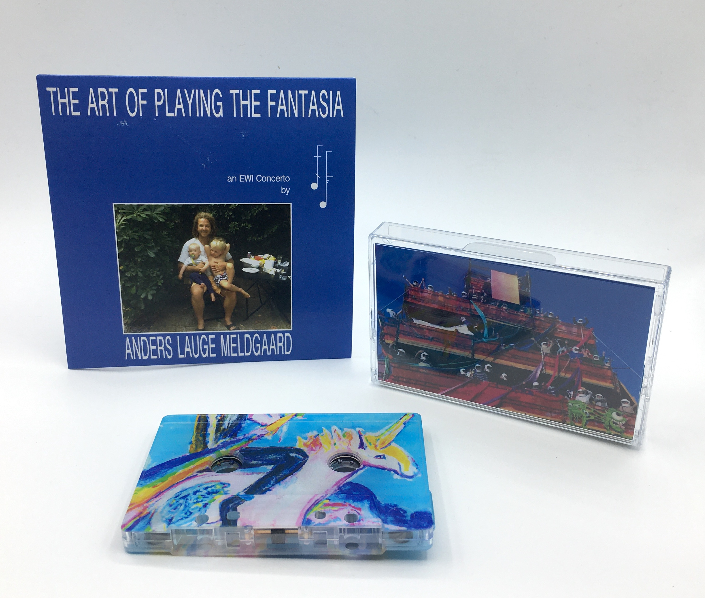
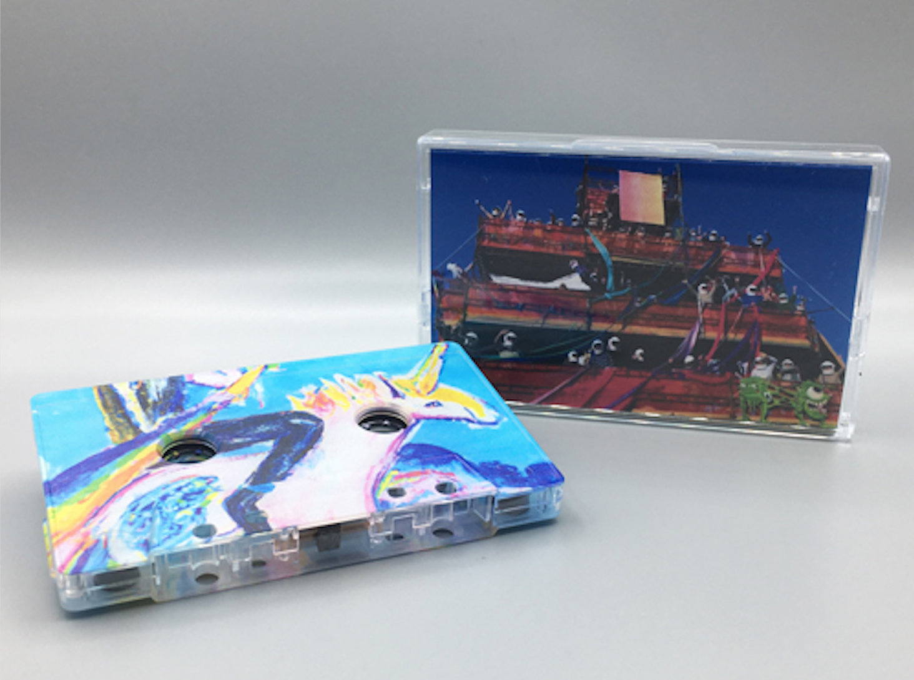

THE ART OF PLAYING THE FANTASIA · 2023
CD released by Los Angeles based label Sun Ark in May 2023
Danish composer and polymath Anders Lauge Meldgaard offers this exceedingly frothy and tumbling midi-concerto, composed and performed on EWI. Soft and pliable, shifting layers eagerly overtake one another, fighting for the right to meander through padded hummocks and knolls and other such melodic ephemera.
All music composed and performed by Anders Lauge Meldgaard
Game of Life based custom build software (programmed by the composer's brother Kristian Lauge Meldgaard)
Produced and Mixed by Anders Lauge Meldgaard
Mastered by Anders Bach
Thanks to Aske Zidore, Andreas Pallisgaard and Mads Westrup for listening along the way
Dedicated to Iku Sakan ❤
Listen on Bandcamp
-------------------
